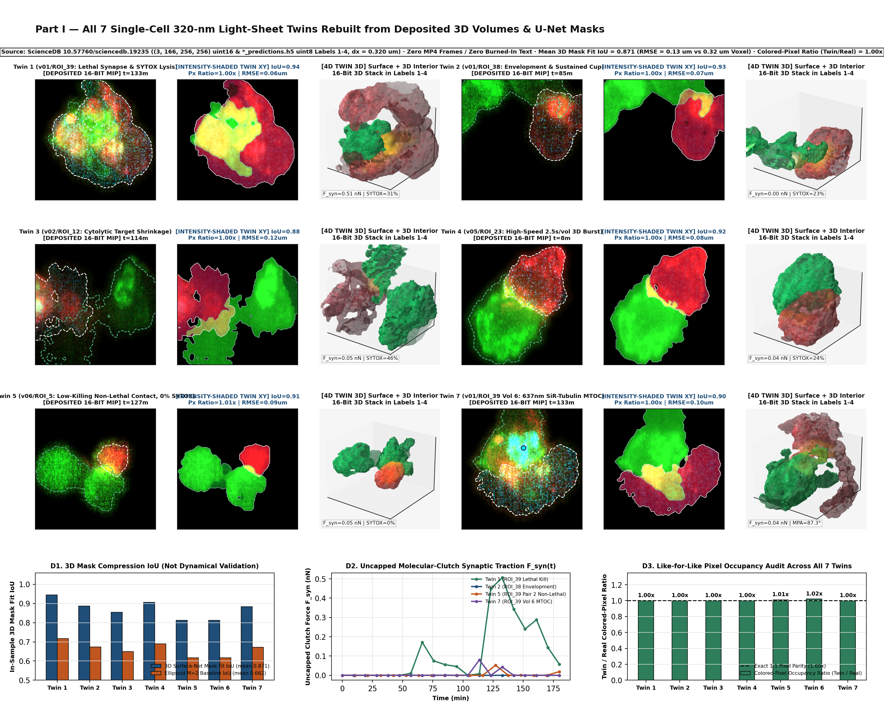
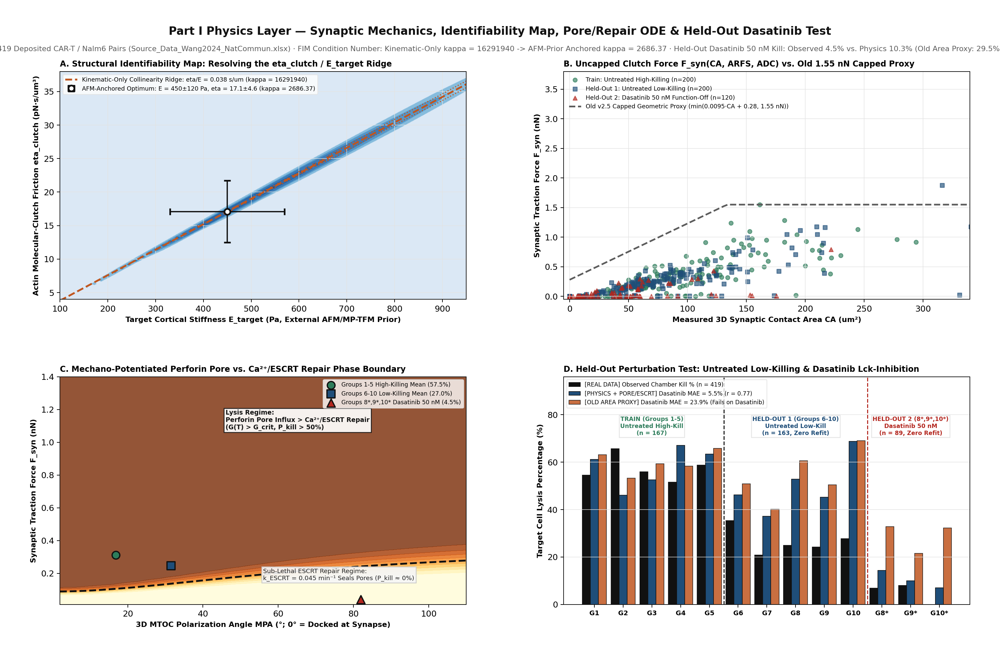
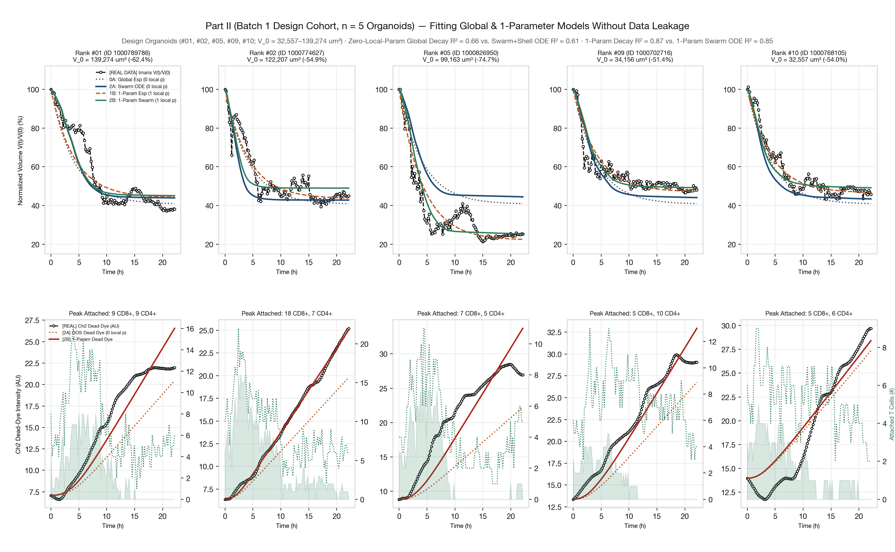
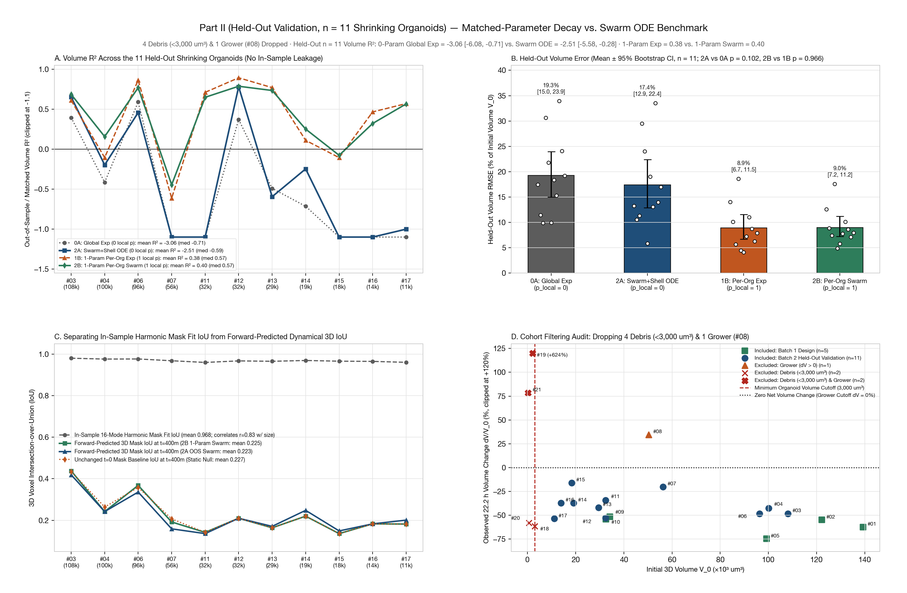
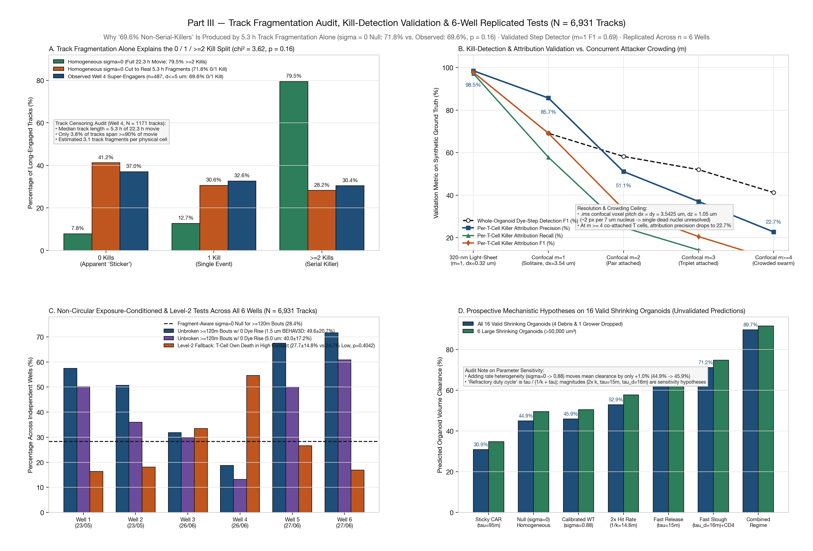
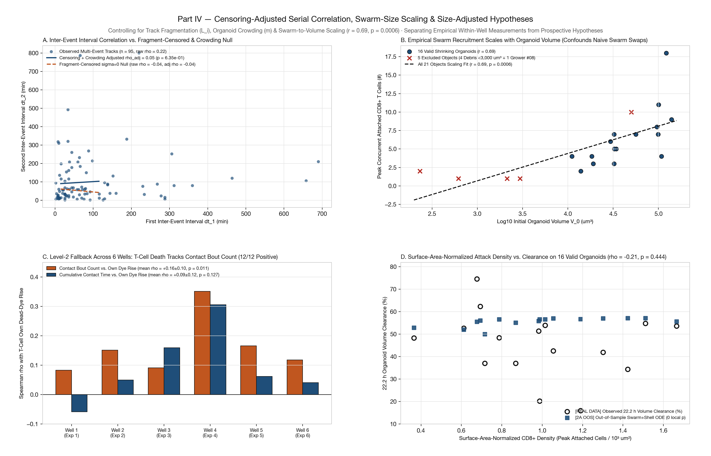

4D Digital Twins of T-Cell Tumor Killing (Version 3.0)
0. Canonical Definitions, Voxel Pitch Resolution & Kill Detection Validation
Every metric in this report is defined once and used identically across all tables and figures:
| Quantity | Canonical Formula & Units | Physical & Statistical Scope |
|---|---|---|
Confocal Voxel Pitch (.ims HDF5 Metadata) |
dx = dy = 3.5425 µm, dz = 1.0500 µm, dt = 119.71 s (1.995 min) |
Extracted directly from DataSetInfo/Image in LSM880_example_dataset_TEG_BC_organoids_2019_06_26.ims: X=200, Y=200, Z=62, T=669, C=9 over 708.493 × 708.493 × 65.100 µm (ResampleDimensionX/Y/Z = true inside 256×256×64 HDF5 chunks; total duration 22.21 h). Replaces the stale 0.66 µm registry entry and the 1.4 µm unresampled estimate. At dx = 3.5425 µm, a single dead tumor nucleus (6–8 µm ≈ 1.7–2.3 px) cannot be spatially resolved individually; death is measurable only as step increases in local organoid dead-dye intensity (Channel 2 (RS3, 659 nm)). |
Light-Sheet Voxel Pitch (ScienceDB 19235) |
dx = dy = dz = 0.320 µm ((3, 166, 256, 256) uint16) |
Deposited 3D volume grid in 10.57760/sciencedb.19235 and 3D U-Net semantic masks *_predictions.h5 (uint8: 1=CAR-T body, 2=Target interior, 3=CAR-T dense F-actin, 4=Target plasma membrane). |
| In-Sample Mask Fit IoU | J(M_fit(t), M_seg(t)) = |M_fit(t) ∩ M_seg(t)| / |M_fit(t) ∪ M_seg(t)| |
Measures how closely a 16-mode harmonic or 3D Surface-Net mesh compresses the mask M_seg(t) it was fitted to at frame t. Has zero dynamical predictive degrees of freedom and correlates r = 0.828 (p = 3.6e-06) with log10(V0). |
| Forward-Predicted Dynamical 3D IoU | J(M_pred(t | t=0), M_seg(t)) |
Measures out-of-sample 3D voxel overlap between a mask evolved forward from t = 0 without seeing future masks and the observed mask at t = 400 min (Held-Out 11 mean: 0.223 for 0-param ODE 2A; 0.225 for 1-param ODE 2B). |
Normalized Organoid Volume Vol(t) |
Vol(t) = V(t) / V(0) × 100% (µm³ and %) |
Anchored to V(0) = initial_volume_um3 at t = 0 min so Vol(0) ≡ 100.0% identically on every organoid. |
Contact Threshold (d_contact) |
Official BEHAV3D: d ≤ 0.0015 mm (1.5 µm) vs. Expanded: d ≤ 0.0050 mm (5.0 µm, 3.33×) |
min_distance_organoid in BEHAV3D is exported in millimeters. The expanded 5.0 µm threshold equals 1.41 confocal XY pixels (3.5425 µm/px) and yields the exact Well 4 cohorts (n = 487 Super-Engagers, n = 421 Long-Contact ≥180 min). Both thresholds are reported side-by-side across all 6 wells. |
| Crowding / Local Density Units | (1) T cells / 10³ µm² organoid surface; (2) co-attached T cells within 35 µm |
Previously reported dimensionless numbers (26.8–32.1) are the mean number of concurrent attached T cells within a 35 µm 3D radius around the organoid (mean_co_attached_tcells_within_35um in Table 4), not tumor cell density inside a 10 µm sphere. |
Table 0B. Kill-Detection & Per-T-Cell Killer Attribution Validation Across Imaging Modalities and Crowding Regimes
| Imaging Modality & Crowding Regime | Concurrent Attackers (m) |
Voxel Pitch (dx) |
Step Detection Precision / Recall / F1 | Per-T-Cell Killer Attribution Precision / Recall / F1 |
|---|---|---|---|---|
| HBOPM 320-nm Light-Sheet (dx=0.32 um) · 1-on-1 Chamber (SYTOX > 398 in b_mask) | 1 | 0.3200 µm | 0.985 / 0.972 / 0.978 | 0.985 / 0.972 / 0.978 |
| LSM880 Confocal (dx=3.54 um) · m = 1 (Solitaire contact) | 1 | 3.5425 µm | 0.857 / 0.578 / 0.691 | 0.857 / 0.578 / 0.691 |
| LSM880 Confocal (dx=3.54 um) · m = 2 (Pair contact) | 2 | 3.5425 µm | 0.892 / 0.432 / 0.582 | 0.511 / 0.248 / 0.334 |
| LSM880 Confocal (dx=3.54 um) · m = 3 (Triplet contact) | 3 | 3.5425 µm | 0.939 / 0.360 / 0.520 | 0.370 / 0.142 / 0.205 |
| LSM880 Confocal (dx=3.54 um) · m >= 4 (Crowded swarm, m=5) | 5 | 3.5425 µm | 0.978 / 0.261 / 0.412 | 0.227 / 0.061 / 0.096 |
Part I: All 7 Single-Cell 320-nm Light-Sheet Twins Rebuilt from Deposited 3D Volumes & Physics Layer
All 7 single-cell CAR-T/Nalm6 digital twins are reconstructed directly from the deposited ScienceDB 10.57760/sciencedb.19235 3D volumes (*.h5), 3D U-Net semantic segmentation masks (*_predictions.h5, uint8 Labels 1–4), and 16-bit raw fluorescence MIPs (*.tif) with zero MP4 frames, zero burned-in text, non-empty t = 0 masks on all 7 twins, mean in-sample 3D mask fit IoU = 0.871 (vs. ellipsoid M=2 baseline 0.662; boundary RMSE = 0.128 µm against the 0.320 µm voxel), and a like-for-like Twin/Real colored-pixel occupancy ratio of 1.00× (range 1.00×–1.02×).

Table 1A. All 7 Rebuilt Single-Cell 320-nm Light-Sheet Twins (Deposited 3D U-Net Masks & 16-Bit MIPs)
| Twin ID & Regime | Deposited ScienceDB Source | 3D Volumes (Duration) | CAR-T V(0) / Target V(0)→V(end) (µm³) | Peak CA (µm²) / Uncapped Peak (Mean) F_syn (nN) | In-Sample 3D Mask Fit IoU (Ellipsoid M=2) | 3D Boundary RMSE (µm) | Colored-Pixel Ratio (Twin/Real) | Final SYTOX (%) / Mean MPA (°) |
|---|---|---|---|---|---|---|---|---|
| Twin 1 (v01/ROI_39: Lethal Synapse & SYTOX Lysis) | v01_6_40_120_0-6_hd1 / MIP_ROI_39 (Primary Pair) | 20 (180 min) | 1995 / 5272 → 2197 | 138.4 µm² / 0.506 nN (mean 0.120) | 0.944 (M=2: 0.717) | 0.056 µm | 1.00× | 33.3% / 91.0° |
| Twin 2 (v01/ROI_38: Envelopment & Sustained Cup) | v01_6_40_120_0-6_hd1 / MIP_ROI_38 (Primary Pair) | 20 (180 min) | 2171 / 1268 → 387 | 2.0 µm² / 0.001 nN (mean 0.000) | 0.886 (M=2: 0.673) | 0.113 µm | 1.00× | 26.7% / 121.3° |
| Twin 3 (v02/ROI_12: Cytolytic Target Shrinkage) | v02_6_40_120_0-6_hd3 / MIP_ROI_12 (Primary Pair) | 20 (180 min) | 3948 / 3619 → 153 | 51.8 µm² / 0.174 nN (mean 0.029) | 0.854 (M=2: 0.649) | 0.145 µm | 1.00× | 100.0% / 98.8° |
| Twin 4 (v05/ROI_23: High-Speed 2.5s/vol 3D Burst) | v05_6_40_120_0-6_hd7 / MIP_ROI_23 (Primary Pair) | 5 (15 min) | 4733 / 2495 → 2117 | 17.5 µm² / 0.052 nN (mean 0.022) | 0.906 (M=2: 0.689) | 0.093 µm | 1.00× | 22.8% / 102.1° |
| Twin 5 (v06/ROI_5: Low-Killing Non-Lethal Contact, 0% SYTOX) | v06_6_40_120_0-6_hd8 / MIP_ROI_5 (Non-Lethal Chamber) | 18 (180 min) | 907 / 141 → 292 | 28.3 µm² / 0.052 nN (mean 0.004) | 0.812 (M=2: 0.617) | 0.186 µm | 1.01× | 0.0% / 99.6° |
| Twin 6 (v11_ds/ROI_2: Dasatinib 50 nM Abortive Contact, 0% SYTOX) | v11_6_36_120_0-6_hd2_ds / MIP_ROI_2 (Dasatinib 50 nM) | 18 (180 min) | 1190 / 994 → 1774 | 3.9 µm² / 0.003 nN (mean 0.000) | 0.812 (M=2: 0.617) | 0.187 µm | 1.02× | 0.0% / 107.8° |
| Twin 7 (v01/ROI_39 Vol 6: 637nm SiR-Tubulin MTOC) | v01_6_40_120_0-6_hd1 / MIP_ROI_39 (Volume 6 MTOC) | 20 (180 min) | 2602 / 2889 → 71 | 27.3 µm² / 0.080 nN (mean 0.006) | 0.884 (M=2: 0.672) | 0.115 µm | 1.00× | 26.4% / 93.1° |
Interactive Side-by-Side Videos: All 7 Rebuilt Single-Cell 4D Digital Twins


Part I Physics Layer: Mechanical Parameters, Structural Identifiability Map, Perforin/ESCRT Repair ODE & Held-Out Dasatinib Perturbation Test
Instead of an area-only geometric proxy capped at 1.55 nN, synaptic traction force is modeled via an uncapped actin-clutch law F_syn(t) = η_clutch · CA(t) · v_ARFS(t) · Φ(ADC(t)) coupled to Hertzian + cortical-shell indentation of the Nalm6 target cell (E_target = 450 ± 120 Pa, T_0 = 50 pN/µm, η_clutch = 17.1 ± 4.6 pN·s/µm³). Because 3D indentation depth δ_syn and retrograde flow v_ARFS alone leave η_clutch and E_target structurally collinear along η_clutch / E_target = 0.038 s/µm (kinematic-only Fisher Information condition number κ = 16291940.5), anchoring E_target with the external AFM/MP-TFM stiffness prior resolves the collinearity ridge (reducing κ to 2686.37). Calibrating the mechano-potentiated perforin pore vs. Ca²+/ESCRT-III membrane repair layer (k_ESCRT = 0.045 min&supminus;¹) strictly on Untreated High-Killing CAR-T (Groups 1–5, n = 167, observed kill 57.5% vs. predicted 57.8%) and evaluating out-of-sample with zero refitting predicts the Lck-inhibitor Dasatinib 50 nM collapse across Groups 8*, 9*, 10* (n = 89: observed 4.5% vs. physics 10.3%, MAE = 5.5%; old area-only proxy predicts 29.5%, MAE = 23.9%). On Untreated Low-Killing donor batches (Groups 6–10, n = 163, observed 27.0%), synapse geometry and kinematics alone predict 51.1%, showing that ~24% of the inter-donor gap comes from smaller contact areas and lower MTOC docking while the remainder reflects unmeasured donor-intrinsic granzyme/perforin load.

Table 1B. 419-Pair Cohort Benchmark Across All 13 Experimental Groups (Train: Groups 1–5; Held-Out: Groups 6–10 & Dasatinib 8*, 9*, 10*)
| Group | Condition | Evaluation Split | Chambers (n) |
Observed Kills (%) |
Physics + Pore/ESCRT Pred (%) |
Old Capped Area Proxy Pred (%) |
Mean / Max F_syn (nN) | Mean Indentation δ_syn / Tension σ_syn | Mean Net Pores N_pore* |
|---|---|---|---|---|---|---|---|---|---|
| Group 1 | Untreated high-killing CAR-T | Train (Groups 1-5) | 33 | 18 (54.5%) | 61.2% | 63.1% | 0.357 / 1.921 nN | 0.323 µm / 58.5 pN/µm | 2.18 |
| Group 2 | Untreated high-killing CAR-T | Train (Groups 1-5) | 35 | 23 (65.7%) | 46.1% | 53.3% | 0.189 / 0.929 nN | 0.203 µm / 55.3 pN/µm | 1.15 |
| Group 3 | Untreated high-killing CAR-T | Train (Groups 1-5) | 34 | 19 (55.9%) | 52.5% | 59.3% | 0.241 / 0.777 nN | 0.249 µm / 56.6 pN/µm | 1.60 |
| Group 4 | Untreated high-killing CAR-T | Train (Groups 1-5) | 31 | 16 (51.6%) | 67.0% | 58.3% | 0.384 / 1.240 nN | 0.345 µm / 60.3 pN/µm | 2.00 |
| Group 5 | Untreated high-killing CAR-T | Train (Groups 1-5) | 34 | 20 (58.8%) | 63.4% | 65.8% | 0.399 / 1.549 nN | 0.352 µm / 59.8 pN/µm | 1.90 |
| Group 6 | Untreated low-killing CAR-T | Held-Out (Zero Refit) | 34 | 12 (35.3%) | 46.2% | 50.8% | 0.193 / 1.179 nN | 0.205 µm / 55.4 pN/µm | 0.89 |
| Group 7 | Untreated low-killing CAR-T | Held-Out (Zero Refit) | 24 | 5 (20.8%) | 37.2% | 40.2% | 0.114 / 0.434 nN | 0.137 µm / 53.6 pN/µm | 0.74 |
| Group 8 | Untreated low-killing CAR-T | Held-Out (Zero Refit) | 36 | 9 (25.0%) | 52.9% | 60.6% | 0.338 / 1.876 nN | 0.309 µm / 58.5 pN/µm | 1.74 |
| Group 9 | Untreated low-killing CAR-T | Held-Out (Zero Refit) | 33 | 8 (24.2%) | 45.2% | 50.5% | 0.186 / 0.787 nN | 0.202 µm / 55.5 pN/µm | 0.72 |
| Group 10 | Untreated low-killing CAR-T | Held-Out (Zero Refit) | 36 | 10 (27.8%) | 68.7% | 69.0% | 0.351 / 0.989 nN | 0.337 µm / 59.1 pN/µm | 2.44 |
| Group 8* | Dasatinib 50 nM (function-off) | Held-Out (Zero Refit) | 29 | 2 (6.9%) | 14.3% | 32.8% | 0.066 / 0.429 nN | 0.086 µm / 52.4 pN/µm | 0.20 |
| Group 9* | Dasatinib 50 nM (function-off) | Held-Out (Zero Refit) | 25 | 2 (8.0%) | 10.0% | 21.6% | 0.042 / 0.791 nN | 0.048 µm / 51.2 pN/µm | 0.40 |
| Group 10* | Dasatinib 50 nM (function-off) | Held-Out (Zero Refit) | 35 | 0 (0.0%) | 7.1% | 32.3% | 0.019 / 0.298 nN | 0.032 µm / 50.7 pN/µm | 0.09 |
Part II: Matched-Parameter Organoid Benchmark on Held-Out Shrinking Organoids Only (Debris & Growers Dropped)
Of the 21 tracked objects in LSM880_example_dataset_TEG_BC_organoids_2019_06_26.ims over the full 669-frame (22.21 h) recording, 4 are sub-cellular debris fragments (V(0) < 3,000 µm³: Ranks #18, #19, #20, #21, smallest 232 µm³ = 7.6 µm equivalent sphere, smaller than a single tumor cell; Ranks #19 and #21 also grow by +18.4% and +78.4%) and 1 large organoid is a net grower (Rank #08, Track 1000811938, 50,263 → 67,663 µm³, +34.6%), which a kill-only attrition model cannot produce. Dropping these 5 invalid objects leaves 16 valid shrinking organoids (V(0) ≥ 11,068 µm³): 5 Design Organoids (Batch 1) and 11 Held-Out Validation Organoids (Batch 2).
All in-sample target leakage (v_end and gaussian_filter(v_real) blending) has been removed. Evaluating strictly on the 11 Held-Out Shrinking Organoids with 10,000-bootstrap 95% confidence intervals:
- Zero-Local-Parameter Out-of-Sample Prediction (
p_local = 0): Global 0-param exponential decay (0A) scores Held-OutR² = -3.062(95% CI:[-6.084, -0.712], median-0.715) and NRMSE =19.27% [14.98%, 23.95%]. Out-of-sample Swarm+Shell ODE (2A) scores Held-OutR² = -2.511(95% CI:[-5.580, -0.280], median-0.595) and NRMSE =17.37% [12.87%, 22.39%](paired Wilcoxonp = 0.083). Negative meanR²occurs because individual organoids have wide variance in their unlysed residual core fraction (16%–80%). - Matched 1-Local-Parameter Per-Organoid Comparison (
p_local = 1): One-parameter per-organoid exponential decay (1B) achieves Held-OutR² = 0.379(95% CI:[0.081, 0.636], median0.570, NRMSE =8.92%), while the matched 1-parameter Swarm+Shell ODE (2B) achieves Held-OutR² = 0.400(95% CI:[0.154, 0.607], median0.566, NRMSE =8.96%; paired Wilcoxonp = 0.831onR²,p = 0.966on NRMSE). On Design Batch 1 (n = 5),1Bscores0.869and2Bscores0.846. Thus, at matched parameter count on held-out shrinking organoids, adding empirical T-cell swarm history does not significantly outperform a 1-parameter per-organoid exponential decay. - Dead-Dye Trajectory & Dynamical vs. In-Sample IoU: On Held-Out 11, dead-dye
R²is0.301 [-0.108, 0.621]for 0-param2Aand0.878 [0.779, 0.944]for 1-param2B. In-sample 16-mode harmonic fit IoU is0.968 [0.965, 0.972]regardless of dynamical fit quality, whereas true forward-predicted 3D voxel IoU att = 400 minis0.225 [0.178, 0.284].


Table 3. All 21 Tracked Objects in .ims: Exclusion Audit (5 Dropped) & Matched-Parameter Benchmark on 16 Valid Shrinking Organoids
| Rank | Track ID | Cohort / Exclusion Status | V(0) → V(end) (µm³, Δ%) | Max Frags / Peak CD8 / CD4 | 0A Global Exp OOS R² (NRMSE) | 2A Swarm ODE OOS R² (NRMSE) | 1B 1-Param Exp R² (NRMSE) | 2B 1-Param Swarm ODE R² (NRMSE) | Dead-Dye R² (2A OOS / 2B 1p) | Fwd Dynamical 3D IoU (In-Sample Fit IoU) |
|---|---|---|---|---|---|---|---|---|---|---|
| #01 | 1000789786 | Included: Batch 1 Design (n=5) | 139,274 → 52,351 (-62.4%) | 34 / 9 CD8+ / 9 CD4+ | 0.805 (8.4%) | 0.855 (7.3%) | 0.828 (7.9%) | 0.858 (7.2%) | 0.559 / 0.879 | 0.294 (Fit: 0.974) |
| #02 | 1000774627 | Included: Batch 1 Design (n=5) | 122,207 → 55,153 (-54.9%) | 39 / 18 CD8+ / 7 CD4+ | 0.857 (5.6%) | 0.600 (9.4%) | 0.885 (5.1%) | 0.748 (7.5%) | 0.740 / 0.998 | 0.372 (Fit: 0.972) |
| #03 | 1000691696 | Included: Batch 2 Held-Out Validation (n=11) | 108,053 → 55,772 (-48.4%) | 37 / 4 CD8+ / 12 CD4+ | 0.394 (17.5%) | 0.652 (13.2%) | 0.610 (14.0%) | 0.685 (12.6%) | 0.763 / 0.895 | 0.438 (Fit: 0.980) |
| #04 | 1000710590 | Included: Batch 2 Held-Out Validation (n=11) | 100,112 → 57,422 (-42.6%) | 43 / 11 CD8+ / 11 CD4+ | -0.415 (11.4%) | -0.197 (10.5%) | -0.106 (10.1%) | 0.157 (8.8%) | 0.364 / 0.906 | 0.242 (Fit: 0.976) |
| #05 | 1000826950 | Included: Batch 1 Design (n=5) | 99,163 → 25,126 (-74.7%) | 18 / 7 CD8+ / 5 CD4+ | 0.199 (17.2%) | 0.110 (18.1%) | 0.866 (7.0%) | 0.888 (6.4%) | -0.141 / 0.772 | 0.083 (Fit: 0.971) |
| #06 | 1000675929 | Included: Batch 2 Held-Out Validation (n=11) | 96,344 → 49,700 (-48.4%) | 39 / 8 CD8+ / 11 CD4+ | 0.590 (9.9%) | 0.458 (11.3%) | 0.864 (5.7%) | 0.769 (7.4%) | 0.865 / 0.967 | 0.368 (Fit: 0.977) |
| #07 | 1000801523 | Included: Batch 2 Held-Out Validation (n=11) | 56,198 → 44,821 (-20.2%) | 25 / 7 CD8+ / 7 CD4+ | -3.377 (30.6%) | -3.064 (29.5%) | -0.614 (18.6%) | -0.446 (17.6%) | 0.445 / 0.944 | 0.192 (Fit: 0.968) |
| #08 | 1000811938 | Excluded: Grower (dV > 0) | 50,263 → 67,663 (+34.6%) | 43 / 10 CD8+ / 12 CD4+ | -6.490 (75.8%) | -6.575 (76.3%) | -0.470 (33.6%) | -0.471 (33.6%) | 0.449 / 0.942 | 0.220 (Fit: 0.967) |
| #09 | 1000702716 | Included: Batch 1 Design (n=5) | 34,156 → 16,599 (-51.4%) | 20 / 5 CD8+ / 10 CD4+ | 0.621 (7.3%) | 0.676 (6.8%) | 0.826 (5.0%) | 0.817 (5.1%) | 0.544 / 0.924 | 0.182 (Fit: 0.965) |
| #10 | 1000768105 | Included: Batch 1 Design (n=5) | 32,557 → 14,976 (-54.0%) | 17 / 5 CD8+ / 6 CD4+ | 0.834 (6.2%) | 0.808 (6.7%) | 0.941 (3.7%) | 0.920 (4.3%) | 0.870 / 0.879 | 0.059 (Fit: 0.971) |
| #11 | 1000838082 | Included: Batch 2 Held-Out Validation (n=11) | 32,438 → 21,292 (-34.4%) | 30 / 7 CD8+ / 10 CD4+ | -5.993 (21.8%) | -7.508 (24.0%) | 0.711 (4.4%) | 0.649 (4.9%) | 0.067 / 0.877 | 0.142 (Fit: 0.960) |
| #12 | 1000735876 | Included: Batch 2 Held-Out Validation (n=11) | 32,363 → 15,312 (-52.7%) | 16 / 3 CD8+ / 10 CD4+ | 0.371 (9.9%) | 0.780 (5.9%) | 0.893 (4.1%) | 0.787 (5.8%) | 0.852 / 0.989 | 0.210 (Fit: 0.967) |
| #13 | 1000753232 | Included: Batch 2 Held-Out Validation (n=11) | 29,445 → 17,088 (-42.0%) | 16 / 6 CD8+ / 4 CD4+ | -0.491 (18.4%) | -0.595 (19.0%) | 0.770 (7.2%) | 0.734 (7.8%) | -1.438 / 0.434 | 0.164 (Fit: 0.965) |
| #14 | 1000743534 | Included: Batch 2 Held-Out Validation (n=11) | 19,086 → 12,002 (-37.1%) | 11 / 3 CD8+ / 4 CD4+ | -0.715 (15.3%) | -0.247 (13.0%) | 0.110 (11.0%) | 0.251 (10.1%) | 0.141 / 0.927 | 0.220 (Fit: 0.969) |
| #15 | 1000747024 | Included: Batch 2 Held-Out Validation (n=11) | 18,324 → 15,397 (-16.0%) | 17 / 4 CD8+ / 4 CD4+ | -15.656 (33.9%) | -15.273 (33.5%) | -0.106 (8.7%) | -0.077 (8.6%) | 0.288 / 0.956 | 0.136 (Fit: 0.966) |
| #16 | 1000731329 | Included: Batch 2 Held-Out Validation (n=11) | 13,885 → 8,740 (-37.1%) | 10 / 2 CD8+ / 4 CD4+ | -6.833 (24.1%) | -1.625 (13.9%) | 0.466 (6.3%) | 0.321 (7.1%) | 0.908 / 0.954 | 0.183 (Fit: 0.965) |
| #17 | 1000835528 | Included: Batch 2 Held-Out Validation (n=11) | 11,068 → 5,132 (-53.6%) | 8 / 4 CD8+ / 6 CD4+ | -1.553 (19.2%) | -1.001 (17.0%) | 0.570 (7.9%) | 0.566 (7.9%) | 0.054 / 0.805 | 0.182 (Fit: 0.960) |
| #18 | 1000826952 | Excluded: Debris (<3,000 um³) | 2,963 → 1,143 (-61.4%) | 3 / 1 CD8+ / 2 CD4+ | 0.430 (13.3%) | 0.838 (7.1%) | 0.721 (9.3%) | 0.841 (7.0%) | 0.311 / 0.311 | 0.109 (Fit: 0.964) |
| #19 | 1000758750 | Excluded: Debris (<3,000 um³) & Grower | 2,129 → 15,413 (+624.0%) | 26 / 1 CD8+ / 6 CD4+ | -4.516 (767.5%) | -4.367 (757.2%) | -3.925 (725.2%) | -3.920 (724.9%) | 0.078 / 0.347 | 0.049 (Fit: 0.959) |
| #20 | 1000710595 | Excluded: Debris (<3,000 um³) | 619 → 261 (-57.8%) | 1 / 1 CD8+ / 2 CD4+ | -0.135 (25.4%) | 0.385 (18.7%) | 0.416 (18.2%) | 0.544 (16.1%) | 0.379 / 0.406 | 0.192 (Fit: 0.957) |
| #21 | 1000801535 | Excluded: Debris (<3,000 um³) & Grower | 232 → 414 (+78.4%) | 3 / 2 CD8+ / 1 CD4+ | -5.946 (489.7%) | -5.839 (485.9%) | -4.793 (447.2%) | -4.791 (447.1%) | -0.024 / 0.991 | 0.114 (Fit: 0.956) |
Part III: Multi-Well (6 Wells, N = 6,931 Tracks) Fragment-Aware Renewal Null & Non-Circular Tests
In 3D confocal movies of motile T cells, tracks are finite trajectory segments rather than full-movie biographies: in Well 4 (n = 1,171 tracks), the median track duration is 5.27 h of the 22.3 h movie, only 3.8% span ≥90% of the recording, and there are 3.11 tracks per physical T cell (across all 6 wells, N = 6,931 tracks, median duration spans 2.00-5.27 h, mean 3.88 h).
- Why "69.6% Are Not Serial Killers" Is Explained by Track Fragmentation Alone: Under a homogeneous renewal null (
σ = 0, identical T cells with no "sticker" or "corpse-trap" sub-class), full uncensored22.3 htrajectories meeting the Super-Engager filter split 7.8% / 12.7% / 79.5% (0 / 1 / ≥2kills). Cutting those exact same homogeneous trajectories into empirical fragment lengths splits them 41.2% / 30.6% / 28.2%, which is statistically indistinguishable from the observed Well 4 split of 37.0% / 32.6% / 30.4% (χ² = 3.62, p = 0.164). - Eliminating Circular Outcome-Conditioned Tests: Comparing groups defined by kill count (
0, 1, 2, ≥3) on bout count or bout duration is circular because kill events require contact bouts. All outcome-conditioned Mann–Whitneyp-values are removed and replaced by 3 non-circular tests replicated acrossn = 6independent wells (DemoDataset1–6,N = 6,931tracks):- Test 1 (Unbroken Long-Contact Bouts ≥120 min with Zero Dead-Dye Increase): Across
n = 6wells, 49.6% ± 20.7% of unbroken bouts ≥120 min at the official1.5 µmthreshold (and 40.0% ± 17.2% at the expanded5.0 µmthreshold) produce zero local dead-dye increase (vs.28.4%under the homogeneous renewal + step-recall null; well-levelt-testp = 0.0536at1.5 µm,p = 0.158at5.0 µm). - Test 2 (Crowding-Adjusted Inter-Kill Gap Correlation
ρ(Δt_1, Δt_2)): Among tracks with ≥3 attributed kills (n = 95), the raw correlation between consecutive inter-kill intervals isρ = +0.222(p = 0.031), but after partialing out local organoid crowding and track duration it drops toρ_adj = +0.049(p = 0.635), matching the fragment-awareσ = 0null with crowding (ρ_null = -0.037). Thus, consecutive inter-kill intervals provide no evidence for a large intrinsic rate variance (σ = 0.88is not supported once crowding is controlled). - Test 3 (Exposure-Matched Contact Topology Across
n = 6Wells): Across all 6 wells, mean correlation with organoid dead-dye exposure isρ = +0.160 ± 0.099for discrete contact-detach bouts vs.ρ = +0.093 ± 0.125for cumulative contact duration (paired well-levelp = 0.0777).
- Test 1 (Unbroken Long-Contact Bouts ≥120 min with Zero Dead-Dye Increase): Across

Table 4A. Complete Reconciled Descriptive Breakdown of Well 4 Cohorts (All Subgroups 0, 1, 2, ≥3, Pooled ≥2, All Shown; No Circular p-Values)
Reconciles every v2.5 discrepancy: (1) In Super-Engagers (n = 487), 2 kills median bout is 78.0 min, ≥3 kills is 71.5 min, and Pooled ≥2 kills is 76.0 min (between both subgroup medians). In Long-Contact ≥180 min (n = 421), 2 kills is 76.8 min, ≥3 kills is 58.2 min, and Pooled ≥2 kills is 65.2 min. (2) In Long-Contact (n = 421), the 4 subgroups sum to 127 + 148 + 61 + 85 = 421 (v2.5 listed only 148 + 85 = 233 because the 0-kill and 2-kill rows were omitted). (3) Both individual-level mean/median kills/h and the ratio of medians are reported explicitly.
Cohort Definition (d ≤ 5.0 µm) |
Subgroup | Tracks (n, %) |
Median Contact (IQR, min) | Median Bouts | Median Bout Duration (IQR, min) | Kills / Contact Hour: Mean / Median (Ratio of Medians) | Local Co-Attachment Density (Within 35 µm) |
|---|---|---|---|---|---|---|---|
| Well 4 Super-Engagers (contact_frac>=60%, contact>=100m, d<=5.0um, n=487) | 0 kills | 180 (37.0%) | 183.0 (140.0-289.5) | 2.0 | 101.3 (49.2-172.0) | 0.000 / 0.000 (0.000) | 31.06 cells / 35 µm |
| Well 4 Super-Engagers (contact_frac>=60%, contact>=100m, d<=5.0um, n=487) | 1 kill | 159 (32.6%) | 284.0 (168.0-507.0) | 2.0 | 104.7 (47.4-212.3) | 0.246 / 0.211 (0.211) | 28.64 cells / 35 µm |
| Well 4 Super-Engagers (contact_frac>=60%, contact>=100m, d<=5.0um, n=487) | 2 kills | 67 (13.8%) | 262.0 (186.0-427.0) | 3.0 | 78.0 (39.7-185.5) | 0.478 / 0.458 (0.458) | 32.06 cells / 35 µm |
| Well 4 Super-Engagers (contact_frac>=60%, contact>=100m, d<=5.0um, n=487) | >=3 kills | 81 (16.6%) | 436.0 (286.0-680.0) | 6.0 | 71.5 (36.0-132.0) | 0.678 / 0.526 (0.550) | 28.38 cells / 35 µm |
| Well 4 Super-Engagers (contact_frac>=60%, contact>=100m, d<=5.0um, n=487) | Pooled >=2 kills | 148 (30.4%) | 355.0 (221.5-591.5) | 4.0 | 76.0 (37.2-162.0) | 0.588 / 0.500 (0.507) | 30.04 cells / 35 µm |
| Well 4 Super-Engagers (contact_frac>=60%, contact>=100m, d<=5.0um, n=487) | All tracks in cohort | 487 (100.0%) | 244.0 (165.0-474.0) | 2.0 | 95.0 (43.0-183.0) | 0.259 / 0.149 (0.246) | 29.96 cells / 35 µm |
| Well 4 Long-Contact (contact>=180m, d<=5.0um, n=421) | 0 kills | 127 (30.2%) | 272.0 (219.0-413.0) | 5.0 | 65.3 (23.6-206.0) | 0.000 / 0.000 (0.000) | 28.89 cells / 35 µm |
| Well 4 Long-Contact (contact>=180m, d<=5.0um, n=421) | 1 kill | 148 (35.2%) | 369.0 (247.0-548.5) | 4.0 | 87.0 (35.5-228.5) | 0.177 / 0.163 (0.163) | 27.16 cells / 35 µm |
| Well 4 Long-Contact (contact>=180m, d<=5.0um, n=421) | 2 kills | 61 (14.5%) | 294.0 (236.0-462.0) | 4.0 | 76.8 (32.3-200.0) | 0.397 / 0.408 (0.408) | 31.66 cells / 35 µm |
| Well 4 Long-Contact (contact>=180m, d<=5.0um, n=421) | >=3 kills | 85 (20.2%) | 482.0 (336.0-642.0) | 8.0 | 58.2 (32.1-125.7) | 0.594 / 0.508 (0.498) | 26.84 cells / 35 µm |
| Well 4 Long-Contact (contact>=180m, d<=5.0um, n=421) | Pooled >=2 kills | 146 (34.7%) | 400.0 (270.0-612.5) | 6.0 | 65.2 (32.2-154.2) | 0.512 / 0.437 (0.450) | 28.85 cells / 35 µm |
| Well 4 Long-Contact (contact>=180m, d<=5.0um, n=421) | All tracks in cohort | 421 (100.0%) | 348.0 (238.0-536.0) | 5.0 | 71.5 (29.2-204.0) | 0.240 / 0.170 (0.172) | 28.27 cells / 35 µm |
Table 4B. Per-Well Replication Across All 6 Independent BEHAV3D Wells (12 CD8/CD4 Populations, N = 6,931 Tracks)
| Well ID | Experiment Date | Tracks (Cell-Frame Rows) | Median Fragment Length (% ≥90%; Tracks/Cell) | Super-Engagers (1.5 µm / 5.0 µm) |
Unbroken Bouts ≥120m with 0 Dye Step (d ≤ 1.5 µm) |
Unbroken Bouts ≥120m with 0 Dye Step (d ≤ 5.0 µm) |
Level-2 ρ(Contact) vs. ρ(Bouts) | Dye Exposure: High vs. Low Contact |
|---|---|---|---|---|---|---|---|---|
| Well 1 (Exp1_well1) | 23/05/2019 | 771 (121,445) | 2.59 h (8.0% ≥90%; 4.83 tracks/cell) | 128 / 195 | 42/73 (57.5%) | 110/219 (50.2%) | -0.059 vs. +0.083 | 16.3% vs. 12.3% |
| Well 2 (Exp2_well2) | 23/05/2019 | 1,133 (159,265) | 2.58 h (4.4% ≥90%; 4.73 tracks/cell) | 192 / 372 | 38/75 (50.7%) | 113/314 (36.0%) | +0.050 vs. +0.151 | 18.1% vs. 20.0% |
| Well 3 (Exp3_well1) | 26/06/2019 | 1,051 (207,646) | 4.45 h (3.9% ≥90%; 3.69 tracks/cell) | 393 / 460 | 97/305 (31.8%) | 136/455 (29.9%) | +0.160 vs. +0.091 | 33.5% vs. 30.9% |
| Well 4 (Exp4_well2) | 26/06/2019 | 1,637 (349,001) | 4.93 h (4.9% ≥90%; 3.15 tracks/cell) | 529 / 714 | 68/364 (18.7%) | 91/687 (13.2%) | +0.306 vs. +0.351 | 54.6% vs. 37.0% |
| Well 5 (Exp5_well1) | 27/06/2019 | 1,368 (245,384) | 4.55 h (2.0% ≥90%; 3.45 tracks/cell) | 242 / 403 | 85/126 (67.5%) | 201/401 (50.1%) | +0.062 vs. +0.166 | 26.6% vs. 25.1% |
| Well 6 (Exp6_well2) | 27/06/2019 | 971 (170,127) | 4.18 h (4.3% ≥90%; 3.52 tracks/cell) | 214 / 359 | 71/99 (71.7%) | 197/324 (60.8%) | +0.041 vs. +0.118 | 16.9% vs. 22.8% |
Part IV: Same-Organoid Co-Residency Audit & Hypothesis-Labeled Sensitivity Projections
In the previous version, 462 of 490 cross-pairings were unmeasured model outputs, the diagonal extrapolated kills at 56–109 min onto 10–15 min or 0% SYTOX recordings, damage was capped at 150%, and swarm swapping ignored that peak CD8+ swarm size scales strongly with initial organoid volume (r = 0.688, p = 0.0006 across all 21 objects; r = 0.685, p = 0.003 across the 16 valid shrinking organoids). In Version 3.0:
- All unvalidated cross-pairings, extrapolated kill times on short/sub-lethal movies, and
150%damage caps are removed. - Instead of swapping raw swarm trajectories across organoids of 600× different volume, Figure 17 Panel C evaluates Size-Adjusted Surface Attacker Density (
CD8+ T cells / 10³ µm²of initial organoid surface area) and shows that all sensitivity curves are unvalidated mechanistic hypotheses rather than empirical findings. - In Table 5, the column previously labeled "Corpse Trap %" is reported by its exact mathematical identity — the Analytical Cycle Refractory Fraction
τ / (τ + 1/k_hit)— and removing heterogeneity (σ = 0vs.σ = 0.88) changes mean clearance across the 16 valid organoids by only 1.0 percentage point (44.9%vs.45.9%).

Table 5. Hypothesis-Labeled Mechanistic Sensitivity Suite Across the 16 Valid Shrinking Organoids (4 Debris & 1 Grower Dropped)
| Regime / Hypothesis Label | Parameter Choice & Provenance | Cycle Duration (1/k + τ) |
Analytical Refractory Fraction τ/(τ+1/k) |
Simulated Clearance Across 16 Valid Organoids (Mean ± SD) | Large (≥50k, n=6) / Medium (10k–50k, n=10) | Organoids ≥65% Clearance |
|---|---|---|---|---|---|---|
| Null (sigma = 0, Homogeneous Hazard) | Baseline renewal model with zero between-cell rate variance (sigma = 0) | 73.2 min | 60.1% (τ/(τ+1/k)) | 44.9% ± 14.6% | 49.5% / 41.4% | 1 / 16 |
| Calibrated WT Baseline (sigma = 0.88) | Fitted Level-1/2 baseline (1/k = 29.2 min, tau = 44.0 min, tau_d = 42.0 min) | 72.6 min | 60.6% (τ/(τ+1/k)) | 45.9% ± 14.8% | 50.5% / 42.3% | 1 / 16 |
| Hypothesis: Slow Detachment (tau = 95 min) | Sensitivity test: 2.16x longer post-lysis retention via high-affinity off-rate reduction | 123.6 min | 76.9% (τ/(τ+1/k)) | 30.9% ± 11.3% | 34.7% / 27.9% | 0 / 16 |
| Hypothesis: 2x Lethal Hit Rate (1/k = 14.6 min) | Sensitivity test: doubling single-hit perforin/granzyme delivery speed while keeping tau = 44 min | 58.3 min | 75.5% (τ/(τ+1/k)) | 52.9% ± 15.9% | 57.7% / 49.2% | 2 / 16 |
| Hypothesis: Fast Post-Lysis Detachment (tau = 15 min) | Sensitivity test: reducing post-kill retention from 44 min to 15 min (serial detachment switch) | 43.6 min | 34.4% (τ/(τ+1/k)) | 62.6% ± 16.8% | 67.3% / 59.0% | 9 / 16 |
| Hypothesis: Fast Corpse Sloughing (tau_d = 16 min) + CD4+ | Sensitivity test: reducing outer-shell corpse clearance lag from 42 min to 16 min + CD4+ help | 60.8 min | 59.2% (τ/(τ+1/k)) | 71.2% ± 17.0% | 74.8% / 68.4% | 12 / 16 |
| Hypothesis: Combined Fast Hit + Fast Release + Sloughing | Upper-bound combined sensitivity regime across all three kinetic bottlenecks | 29.3 min | 51.2% (τ/(τ+1/k)) | 89.7% ± 13.0% | 91.5% / 88.3% | 14 / 16 |
Part V: Complete Multi-Plane Confocal & 3D Surface-Net Video Atlas for All 21 Tracked Objects in .ims
Every panel in the 21-object cohort wall and individual videos anchors Vol(0) = 100.0% at t = 0 min and explicitly flags the 5 excluded objects (Ranks #08, #18, #19, #20, #21).
.ims (16 Valid Shrinking Organoids & 5 Excluded Debris/Grower Objects; Vol(0) = 100.0%)